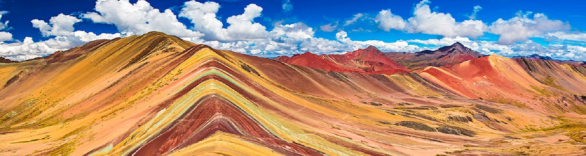
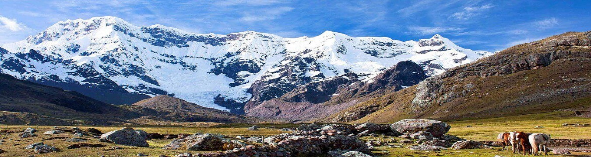

Vinicunca - Cerro Colorado

DANZA
CANCHI

DEPORTES
deportes extremos
La entrada oficial a la Montaña Arcoiris es por un pueblito llamado Pitumarca, a dos horas de la ciudad del Cusco, luego una caminata a pie, en auto o en moto por las faldas de la montaña y luego se puede subir en caballo o a pie el resto del camino hasta llegar a la Montaña de Colores.
Saliendo de la ciudad del Cusco, se conduce por la carrera Longitudinal de la Sierra del Sur peruano (PE-3s) en dirección a la localidad de Checacupe donde se toma la bifurcación hacia el poblado de Pitumarca, y a partir de este poblado se recorre el viaje por una trocha carrosable pasando por varias comunidades campesinas como Ocefina, Japura, Hanchipacha, hasta arribar a la comunidad de Pampa Chiri, lugar donde termina la carretera e inicia la caminata de 5km aproximadamente hasta el paso de Vinincunca. donde se puede apreciar la Formación Natural con forma de Arco iris, considerado la Montaña de Colores
Todos los viajeros están de acuerdo en que la mejor época del año para visitar la monta arco iris es en el mes de agosto, ya que es época seca y ello es excelente para visitarla. Sus ya famosos colores se ven bastante bien. Tienes que intentar evitar días en los que haya llovido (diciembre, enero y febrero) o épocas en los que haya caído una nevada.8
Ausangate (Awsanqati en quechua) es la quinta montaña más alta del Perú, su altitud máxima es de 6.372 msnm. Está situada a unos 100 kilómetros al sudeste de la ciudad del Cusco.
Se sitúa en la cordillera de los andes, en un tramo denominado cordillera de Vilcanota, correspondiente a la región Cusco en el Perú. Su principal cima está a 6,372 metros sobre el nivel del mar con lagunas grandes con un color verde/azul luminoso.
En la mitología inca de esta montaña y de los lagos cercanos - entre los que destaca Sibinacocha - nace la energía masculina que fertiliza a la madre tierra Pachamama; luego de un largo discurrir, las aguas se pierden en las tierras ignotas del Amazonas para retornar, a llenar los lagos y los glaciares cada noche convertida en el río de estrellas o Willkamayu conocida en occidente como la Vía Láctea. La Comunidad de Chillca constituida por pastores de llamas y alpacas es conocida como la guardiana de estos pristinos parajes, desde donde se puede hacer caminatas de montaña pasando la noche en cómodos albergues o tambos, entre los que destacan Machuracay Tambo, en un trekking denominado "Camino del Apu Ausangate".
Cada año al lado norte del Ausangate se celebra desde tiempo inmemoriales la fiesta de Qoyllur Rit'i (quechua: "nieve de estrella") antes de la fiesta del Corpus Christi, durante la cual miles de quechuas peregrinan al Señor de Quyllur Rit'i en el templo de Sinakara (pintura realizada sobre una roca). Este peregrinaje fue incluido dentro de la Lista Representativa del Patrimonio Cultural Inmaterial de la Humanidad.
La caminata por la montaña del Ausangate es considerada turismo de aventura. El camino presenta formaciones rocosas a una altura de más de 5 mil metros cubiertas por lenguas de hielo.

First slide Caption
Second slide Caption

Third slide Caption
El ciclismo de montaña, considerado un deporte de riesgo, es un ciclismo de competición realizado en circuitos naturales generalmente a través de bosques por caminos angostos con cuestas empinadas y descensos muy rápidos
Motocrós es una forma de competición en todo terreno celebrada en circuitos cerrados. El deporte fue evolucionando desde las pruebas celebradas en el Reino Unido.23 El motocrós es un deporte físicamente exigente que tiene lugar en todo tipo de condiciones.